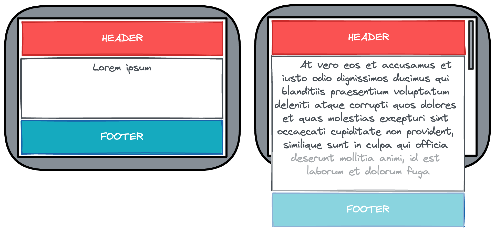

Sticky footer
Cette recette a été publiée le
Cas d'usage étudié
Placer le footer en bas de l’écran lorsque le contenu du site n’est pas suffisant pour remplir tout le viewport, ou en dessous de la ligne de flottaison si le contenu du site est plus grand que le viewport.

Solution proposée
Nous vous recommandons d’utiliser Flexbox, pour son côté moderne et flexible. Nous partons avec les hypothèses suivantes :
- L’élément
htmla uneheightà100%(ou100vh). - L’élément
bodya unemin-heightà100%, afin de prendre au moins toute la hauteur de l’écran. - L’élément
bodyest l’élément qui contient à la fois leheader, lefooter, et le contenu principal du site (regroupé sous un seul élément avec pour idcontent).
Pour répondre à notre objectif, il faudra :
- Ajouter les propriétés
display: flexetflex-direction: columnà l’élémentbody - Permettre au contenu principal du site d’occuper tout l’espace restant disponible grâce à la propriété
flex-grow: 1sur la div avec l’idcontent.
html {
height: 100%;
width: 100%;
}
body {
display: flex;
flex-direction: column;
min-height: 100%;
margin: 0;
font-family: "Segoe UI", Tahoma, Geneva, Verdana, sans-serif;
}
header {
padding: 20px;
font-size: 3rem;
background-color: powderblue;
}
footer {
padding: 20px;
background-color: peachpuff;
text-align: center;
}
#content {
flex-grow: 1;
padding: 20px;
text-align: center;
}<!DOCTYPE html>
<html lang="en">
<head>
<meta charset="UTF-8" />
<title>Sticky footer</title>
<link rel="stylesheet" href="style.css" />
</head>
<body>
<header>
Hello there
</header>
<div id="content">
Welcome to my cool website
</div>
<footer>
<div>Copyright</div>
<div>Privacy</div>
<div>Terms of use</div>
<div>Sitemap</div>
</footer>
</body>
</html>Autres solutions
Il existe d'autres manières de placer le footer en bas de l’écran, avec parfois leurs contraintes :
display: grid: si vous avez également des colonnes à agencerposition: absoluteouposition: fixed: à éviter sauf si votre footer doit rester en permanence en bas de viewport et donc éventuellement au-dessus du contenu du site. Prévoir unpadding-bottomau moins égal à la hauteur dufootersur l'élément parent.display: table: seulement si vous êtes repartis dans les années 90 ou 2000 avec support de très vieux navigateurs ne supportant pas le flexbox.